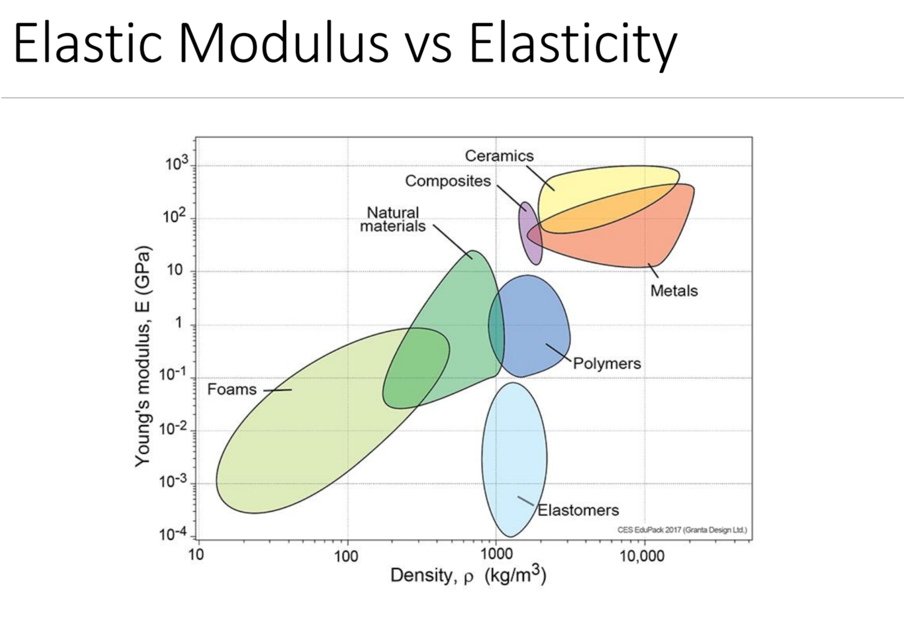
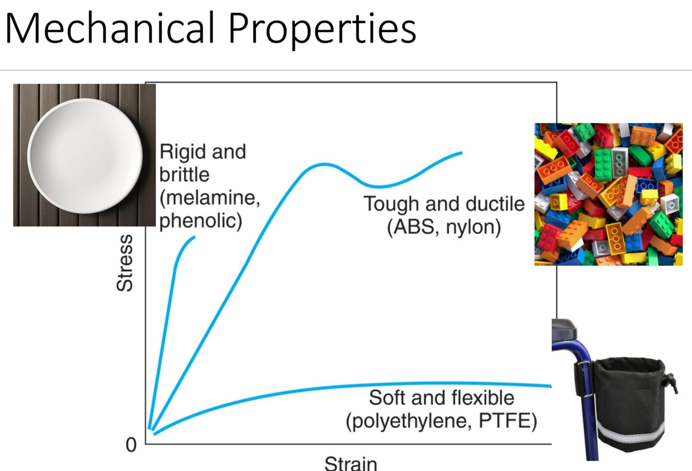
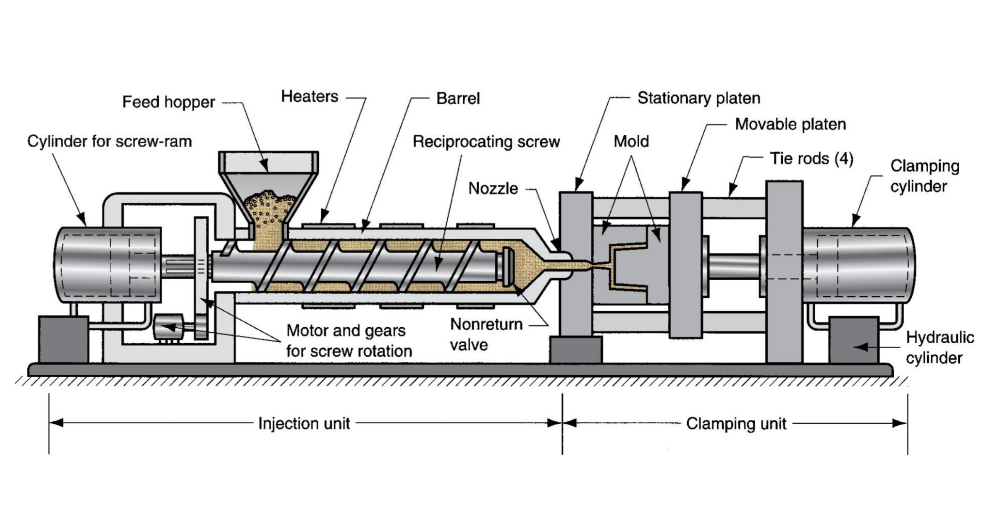
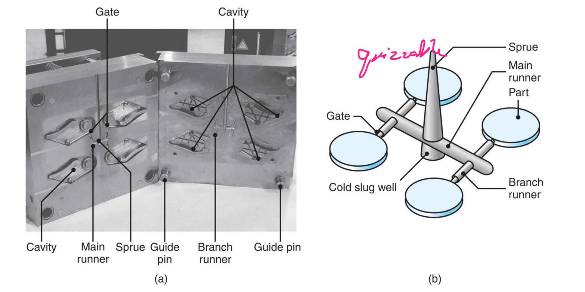
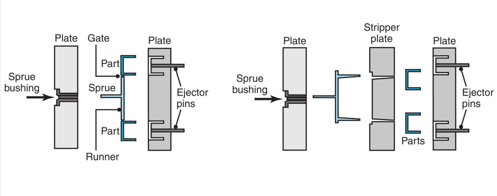
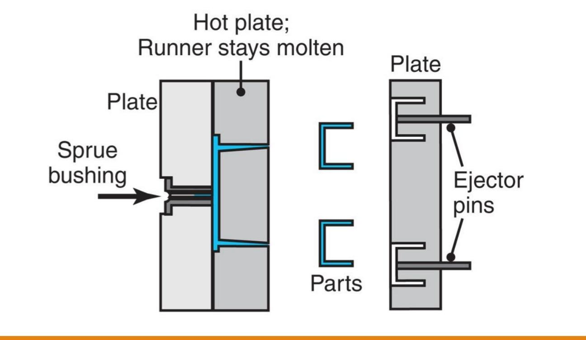
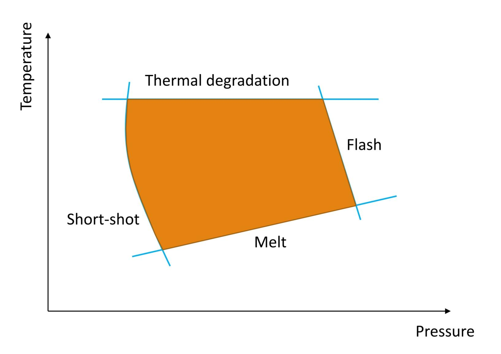
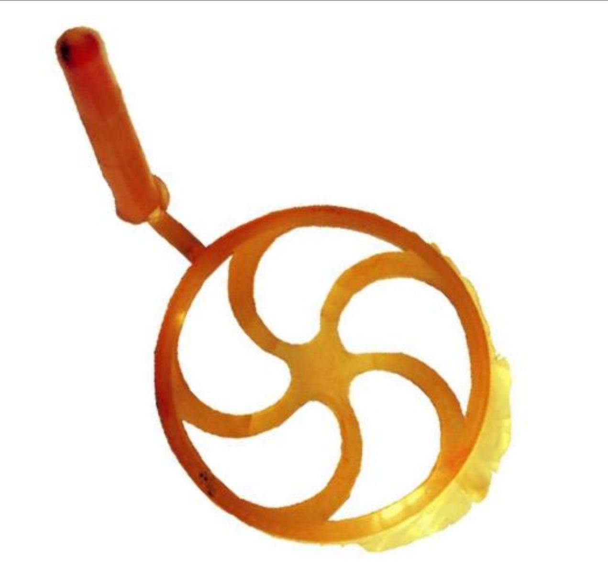
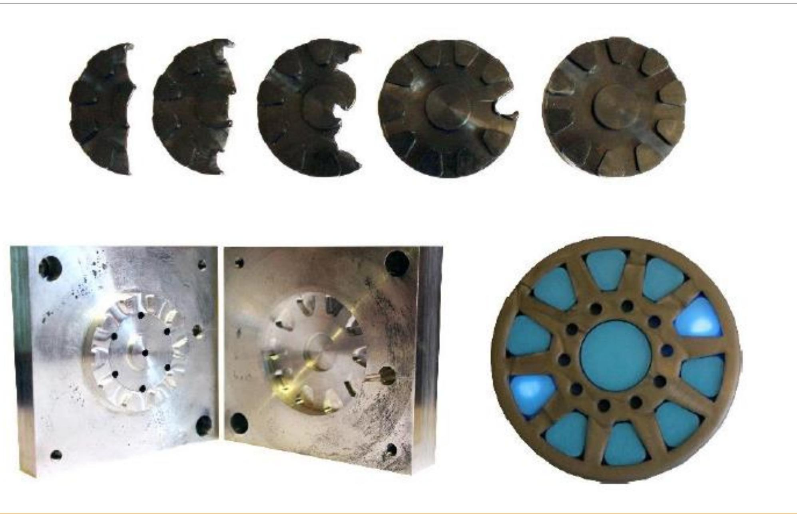
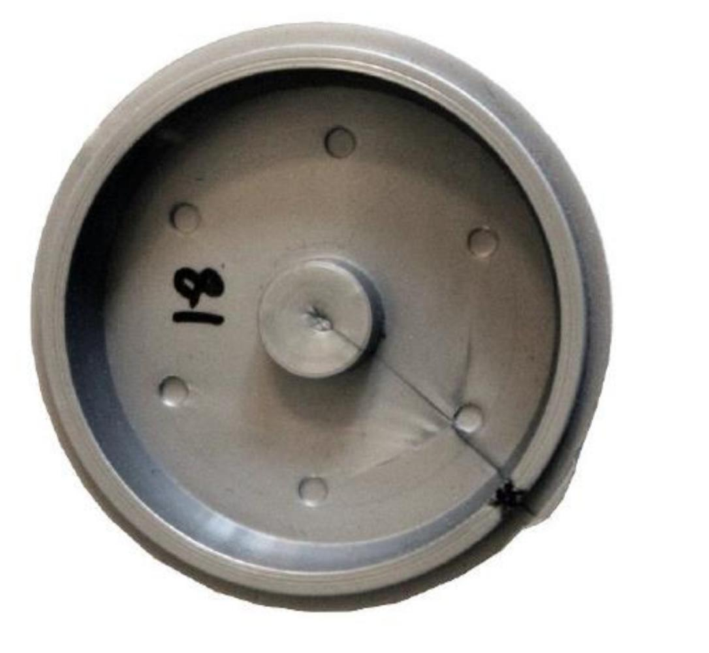

1. Introduction to Injection Molding
Injection molding is one of the most important and versatile manufacturing processes in the world, used to mass-produce plastic parts of complex shape. The highest-volume injection-molded part ever made is the LEGO brick. Global plastic production grows at 3–5% annually and now exceeds 350 million metric tonnes per year.
🔑 Core idea: Polymer pellets are melted by heat and pressure, forced under high pressure into a closed mold cavity, allowed to cool and solidify, then ejected as a finished part.
Why Injection Molding?
- Produces complex three-dimensional shapes in a single operation
- High production rate — cycle times as short as a few seconds
- Low cost per part at high volume
- Wide range of polymers, colors, and surface textures achievable
- Little to no post-processing required
Comparison with Machining
| Attribute | Injection Molding | Machining |
|---|---|---|
| Production Rate | High | Low–Medium |
| Quality | Good | As good or better |
| Cost (high volume) | Low | Almost always greater |
| Flexibility | Low (tooling cost is high) | High (within machine constraints) |
2. Fundamentals of Polymers
The word polymer comes from Greek: poly (many) + mer (structural unit). Polyethylene, for example, is made by linking many ethylene monomers together using heat, pressure, and a catalyst. The chemistry of the individual units and how they are connected determines both the processability and the mechanical properties of the material.
Polymer Network Architectures
| Architecture | Description | Examples |
|---|---|---|
| Linear | Chains arranged end-to-end; can melt and re-solidify | Acrylics, Nylons — thermoplastics |
| Branched | Side chains off the main backbone | Low-density polyethylene (LDPE) |
| Cross-linked | Chains linked laterally — cannot fully melt | Rubbers, elastomers |
| Network | Highly cross-linked 3D network — rigid and infusible | Epoxies, phenolics — thermosets |
⚠️ Key distinction: Thermoplastics (linear/branched) soften on heating and re-harden on cooling — they are injection-moldable. Thermosets (network) cure irreversibly and cannot be re-melted.
Crystallinity
Polymers can have both amorphous regions (randomly tangled chains) and crystalline regions (crystallites — ordered, folded chains). The higher the degree of crystallinity, the harder, stiffer, and less ductile the polymer. Rapid cooling during injection molding tends to produce more amorphous structure; slow cooling promotes crystallinity.
Mechanical Behaviour
- Rigid and brittle — melamine, phenolic (thermosets)
- Tough and ductile — ABS, nylon (engineering thermoplastics used in LEGO, gears, etc.)
- Soft and flexible — polyethylene, PTFE (used in packaging, coatings)
Glass Transition Temperature (Tg) and Melt Temperature (Tm)
Below Tg the polymer is glassy and rigid. Between Tg and Tm it is rubbery/leathery. Above Tm it becomes viscous and flowable — this is the injection-molding processing zone.
Viscosity
Liquid thermoplastics have a viscosity 100,000 to 1,000,000 times that of water. Polymer viscosity is shear-thinning (pseudoplastic): the faster the material is injected, the lower its apparent viscosity — making injection molding feasible.
| Material | Dynamic Viscosity (Pa·s) |
|---|---|
| Water (room temperature) | 10⁻³ |
| Honey | 10 |
| Liquid thermoplastic (processing) | 10² – 10³ |
| Molten aluminium at 600 °C | 3 × 10⁻² |


3. The Injection Molding Machine
An injection molding machine has two main sub-systems: the injection unit (melts and injects the polymer) and the clamping unit (holds the mold closed against injection pressure).

Fig 3.1 — Schematic of an injection molding machine: injection unit (left) and clamping unit (right)
How to Choose a Machine — Key Parameters
- Clamping force — force available to hold the mold halves closed against injection pressure (rated in kN or tons)
- Injection pressure — maximum pressure to force molten plastic into the cavity (typically 100–200 MPa)
- Shot size — total volume of material transferred per cycle (part + runners + sprue)
The machine must provide enough clamping force to prevent the mold from opening under injection pressure. Insufficient clamping → flash defect.
4. Mold Tooling and Features
The mold is the heart of the injection molding process and determines part geometry, surface finish, and cycle time. Molds are expensive (often $10,000–$100,000+) but can produce millions of cycles.

Fig 4.1 — Injection mold features: sprue, runner system, gate, cavity, ejector pins, cooling channels, and cold slug well
Key Mold Components
| Component | Function |
|---|---|
| Sprue | Entry point through which molten plastic first enters the mold from the nozzle |
| Runner | Channel system that distributes plastic from sprue to individual cavities |
| Gate | Narrow restriction between runner and cavity; controls flow and solidifies first |
| Cavity | The negative of the finished part shape; determines geometry and surface finish |
| Cold slug well | Traps the first (cooled) slug of plastic from the nozzle, preventing it entering the cavity |
| Ejector pins | Push the solidified part out of the mold when it opens |
| Cooling channels | Water-cooled passages that remove heat and control cycle time & part quality |
| Guide pins | Align the two mold halves precisely when closing |
Types of Molds

Fig 4.2 — Mold types: two-plate, three-plate, and hot runner compared
- Two-plate mold — simplest type; sprue, runners, and parts all on the same parting plane; runner must be manually separated
- Three-plate mold — adds an extra plate so the runner system is automatically separated from the parts; no manual sorting needed
- Hot runner mold — used by LEGO; a heated manifold keeps the runner plastic molten between shots; only the finished part solidifies and is ejected; reduces material waste and cycle time
Hot Runner Mold — Detail

Fig 4.3 — Hot runner mold: the heated manifold keeps plastic permanently molten — zero runner scrap
🔑 Hot runner advantage: No runner scrap — the plastic in the heated manifold stays molten and feeds the next shot directly. This is crucial for LEGO's precision and zero-waste manufacturing.
Draft Angles
Draft angles (typically 1°–3°) are tapered surfaces on part walls that allow the solidified part to be ejected without sticking or dragging against the mold walls. No draft angle = part sticks in mold = damage to part and tooling.
5. Process Parameters & the Injection Molding Cycle
Injection molding is a cyclic process. Each cycle consists of four stages that repeat for every shot.
📋 The four stages: (1) Mold Closing → (2) Injection & Packing → (3) Cooling (longest stage) → (4) Ejection & Reset → repeat
Stage Details
- Stage 1 — Mold closing: The two mold halves are clamped shut with full clamping force
- Stage 2 — Injection & packing: The screw acts as a ram and forces molten plastic into the cavity at high pressure. "Packing" pressure is then held to compensate for shrinkage
- Stage 3 — Cooling: The longest stage; water circulating through cooling channels removes heat. The screw simultaneously rotates to plasticize the next shot
- Stage 4 — Ejection: The mold opens; ejector pins push the solid part out; the mold closes for the next cycle
Shrinkage
All polymers shrink as they cool from melt temperature to room temperature (typical 0.5–5%). Mold cavities must be designed larger than the target part size by the shrinkage factor. Semi-crystalline polymers shrink more than amorphous ones.
Cooling Time — Key Formula
📐 tcool ∝ s² — doubling wall thickness quadruples cooling time. Keeping wall thickness uniform and thin is the single most important design rule.
6. The Process Window & Defects
The process window is the operating region of temperature and pressure within which good parts are produced. Outside this window, one of four defect categories appears.

Fig 6.1 — Injection molding process window: the good-part region is bounded by four defect zones
The Four Defects
| Defect | Cause | Fix |
|---|---|---|
| Short Shot | Insufficient pressure or temperature → melt freezes before filling the cavity | Increase melt temperature, injection pressure, or shot size; add vents |
| Flash | Excess pressure forces melt into the parting line gap → thin fin of plastic | Increase clamping force; reduce injection pressure; check mold fit |
| Thermal Degradation | Temperature too high → trapped air compresses and burns (diesel effect) → black/burned spot | Add vents; reduce temperature; move gate location |
| Sink Marks & Voids | Thick sections cool slower → core shrinks away from surface | Uniform wall thickness; increase packing pressure; use ribs |
Defects — Visual Reference



⚠️ Important exam point: Even staying inside the process window is not sufficient — temperature and pressure are NOT uniform throughout the part. The gate region is at high T and P; the far end of the flow is at lower T and P. Design for maximum uniformity to keep the entire part inside the window simultaneously.
Weld Lines
When two flow fronts meet inside the mold (e.g., around a hole), they fuse to create a weld line — a potential weak point. Reduce by optimising gate position or increasing melt temperature.
Warpage
Non-uniform cooling or asymmetric shrinkage causes the part to distort after ejection. Avoid with uniform wall thickness, symmetric cooling, and balanced runner systems.
7. Design for Injection Molding
Golden Rules
- Uniform wall thickness — the most important rule; reduces sink marks, warpage, and residual stress
- Add draft angles — typically 1°–3° on all vertical walls to allow clean ejection
- Use fillets and radii — avoid sharp internal corners; they concentrate stress and hinder flow
- Avoid undercuts where possible; if required, use side-action cores or collapsible cores
- Minimise wall thickness — thinner walls = shorter cooling time = faster cycle = lower cost
- Place gate at thickest section — plastic flows from thick to thin, reducing short shots and voids
Advanced Techniques
| Technique | Description | Application |
|---|---|---|
| Side Action / Lifters | Moving cores that retract during mold opening to create undercuts | Threads, holes perpendicular to pull direction |
| Insert Molding | A metal insert is placed in the mold before injection; plastic flows around it | USB connectors, threaded bushings, electrical contacts |
| Over-molding | Two materials molded sequentially: rigid base first, then elastomer layer on top | Tool handles, toothbrush grips, razor handles |
| Gas-assist Molding | Nitrogen gas injected after fill, pushing plastic to walls; creates hollow sections | Thick structural handles, tubes |
8. Quick Reference — Process Summary
| Parameter | Typical Range / Rule |
|---|---|
| Injection pressure | 70–200 MPa |
| Melt temperature | 150–370 °C depending on polymer |
| Mold (coolant) temperature | 20–120 °C |
| Cycle time | 10 s – several minutes |
| Cooling fraction of cycle | ~50–80% of total cycle time |
| Shrinkage | 0.5–5% (amorphous < semi-crystalline) |
| Draft angle (smooth surface) | 0.5°–1° |
| Draft angle (textured surface) | 3°–5° or more |
| Recommended wall-thickness ratio (adjacent walls) | < 2:1 (max) |
✔ Advantages
- Complex 3D shapes in one shot
- High production rate
- Low cost per part at volume
- Good surface finish directly from mold
- Multiple materials / colors possible (over-molding)
✗ Limitations
- High initial tooling cost
- Low flexibility — changing part shape requires new mold
- Thin-wall and uniform-thickness constraints
- Shrinkage must be accounted for in mold design